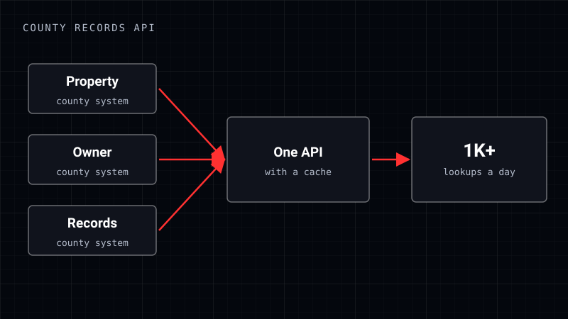

RION sub-project
County records API and client intake
One API in front of 3 county record systems, and client intake that runs on its own.
- Private repo

Three county systems and a lot of typing.
Property, owner and records information each live in their own county system. Anyone who needed a full picture had to ask three places and put the answers together by hand.
Client intake had the same shape: the same details typed into more than one place, which is where duplicate entries come from.
One API in front, a cache behind it, intake on autopilot.
I put all 3 county systems behind one API, so a caller asks one place, not three. The API caches answers, so a repeat lookup does not hit the county system again. It handles 1K+ lookups a day.
I also automated client intake end to end. A client is entered once and the rest runs on its own. Onboarding got 70% faster and duplicate entries stopped.
How a lookup works
Three systems
Property, owner and records each live in their own county system. Each one is read on its own.
One API in front
I put all 3 behind one API. Callers ask one place, not three.
A cache for repeats
The API caches answers. It handles 1K+ lookups a day.
Intake on its own
Intake runs end to end without hand entry. Onboarding got 70% faster and duplicate entries stopped.
By the numbers
- 3county systems behind one API
- 1K+lookups a day, cached
- 70%faster onboarding
What I owned
- Put 3 county record systems (property, owner and records) behind one API.
- Added caching for 1K+ lookups a day.
- Automated client intake end to end. Onboarding got 70% faster and duplicate entries stopped.
What I learned
One clean interface hides messy systems. Callers never needed to know there were three of them.
A cache is the cheapest speed-up when the same questions repeat.